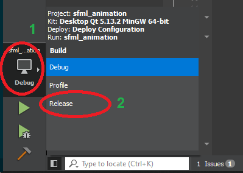
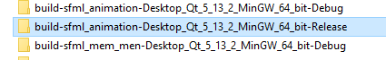
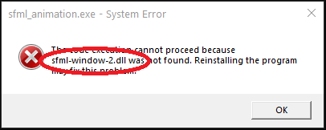

Przygotowanie aplikacji .exe (Deploy)
Przygotowanie aplikacji .exe (Deploy)
Czym jest Deploy
Dotychczas wszystkie nasze programy uruchamialiśmy w środowisku przygotowanym przez używane przez nas środowisko
programistyczne (np. Qt Creator lub Visual Studio). Zazwyczaj, kiedy program/aplikacja jest
gotowa konieczne jest przygotowanie programu, tak aby możliwe było jego uruchomienie przez użytkownika końcowego.
Dla systemu Windows zazwyczaj konieczne jest przygotowanie pliku .exe wraz z towarzyszącymi mu
plikami .dll oraz plikami wczytywanymi przez nasz program, na przykład tekstury lub bliki bazy
danych.
Przykład przygotowania deploy programu dla systemu Windows
Poniższy przykład zakłada zakłada wykorzystanie środowiska Qt Creator, procedura nie będzie się znacząco różnić w przypadku innych środowisk, zmieni się jedynie ścieżka adresów źródłowych folderów. Na potrzeby przykładu zakładamy, że nazwa projektu, którego deploy chcemy wykonać to sfml_animation.
1. Kompilacja wersji Release
Dotychczas, w trakcie pracy nad wszystkimi programami, kompilację wykonywaliśmy w trybie Debug. Tryb Debug, jak sama nazwa wskazuje, pozwala na debugowanie naszych aplikacji, co powoduje że docelowy plik binarny/wykonywalny zawiera dodatkowe informacje, które nie są potrzebne użytkownikowi końcowemu. Właściwą dla deploy wersją kompilacji programu zawsze powinno być Release.
W celu zmiany na Release w Qt Creator klikamy ikonę konfiguracji trybu budowania (1), a następnie wybieramy Release (2):

Następnie budujemy projekt (Ctrl + B) i czekamy na zakończenie procesu kompilacji. Na czas dalszego rozwijania warto zawsze wrócić do trybu Debug.
2. Przygotowanie folderu docelowego
W dowolnym miejscu na dysku tworzymy folder docelowy, do którego będziemy kopiować wszystkie pliki konieczne do uruchomienia naszego programu. Nazwa folderu jest dowolna nie ma ona znaczenia.
3. Kopiowanie pliku .exe
Qt Creator automatycznie buduje projektu w specjalnie, automatycznie, tworzonych do tego celu folderach, tzw. build folders. Jest to ten sam folder, w którym umieszczaliśmy pliki z teksturami, z tą różnicą, że na końcu jego nazwy znajdziemy Release (UWAGA: Jeżeli wcześniej wykonywaliśmy kompilacje w trybie Debug znajdziemy dwa foldery o bardzo zbliżonej nazwie, interesuje nas ten z Release na końcu).
Otwieramy folder budowania w trybie Release:

Po otwarciu folderu otwieramy folder release i kopiujemy plik .exe do naszego folderu
docelowego.
4. Kopiowanie plików .dll kompilatora
Nasz plik wykonywalny .exe nie zawiera wszystkich informacji potrzebnych do jego uruchomienia,
znacząca część funkcjonalności zawarta jest w plikach .dll dostarczanych wraz z kompilatorem. Te
prekompilowane biblioteki są konieczne do niezależnego uruchomienia naszej aplikacji.
Jeżeli korzystasz z kompilatora MinGW
MinGW jest kompilatorem domyślnie wykorzystywanym w trakcie zajęć. Jeżeli nie zmieniłeś/łaś domyślnego folderu instalacji Qt Creator poszukiwane pliki znajdziesz w folderze (UWAGA: w przypadku korzystania z innej wersji kompilatora wybierz folder oznaczony odpowiednią dla ciebie wersją):
C:\Qt\Tools\mingw730_64\binZ powyższego folderu, do folderu docelowego skopiuj następujące pliki:
libgcc_s_seh-1.dll,libstdc++-6.dll,libwinpthread-1.dll.
Jeżeli korzystasz z kompilatora MSVC
...
5. Kopiowanie plików .dll bibliotek
Jeżeli korzystasz z zewnętrznych bibliotek (na przykład SFML), w folderze docelowym należy umieścić
pliki .dll odpowiednie dla danej biblioteki. Zestaw plików .dll różnić się będzie
znacząco pomiędzy bibliotekami. Jeżeli nie wiesz dokładnie, które pliki .dll są konieczne, możesz na
tym etapie spróbować uruchomić aplikację w folderze docelowym, okienko błędu powinno poinformować, jakich plików
brakuje. Uzupełniaj brakujące pliki, aż błędy przestaną się pojawiać:

Dla biblioteki SFML w folderze docelowym należy umieścić następujące pliki:
sfml-audio-2.dll,sfml-graphics-2.dll,sfml-network-2.dll,sfml-system-2.dll,sfml-window-2.dll.
Zwróć uwagę, że nazwy plików nie zawierają w nazwie -d-, które opisuje pliki .dll
właściwe dla tryby Debug.
6. Kopiowanie plików dodatkowych - tzw. assets
Jeżeli twój program korzysta z zewnętrznych plików (na przykład tekstur, pików dźwiękowych, baz danych, plików tekstowych), to należy je skopiować do folderu docelowego, podobnie jak robiłeś/aś to umieszczając je w build folderze w trakcie tworzenia programu i uruchamiania go w środowisku programistycznym. Pamiętaj aby zachować strukturę/hierarchię folderów.
Jeżeli w aplikacji zostały wykorzystane bezwzględne ścieżki do plików zewnętrznych, popraw je na ścieżki względne i ponownie przygotuj deploy.
7. Uruchom program
Tak przygotowany deploy, po podwójnym kliknięciu .exe powinien poprawnie uruchomić nasz program na
każdym, dowolnym, komputerze działającym pod kontrolą systemu Windows w wersji 64 bit.
Autorzy: Tomasz Mańkowski